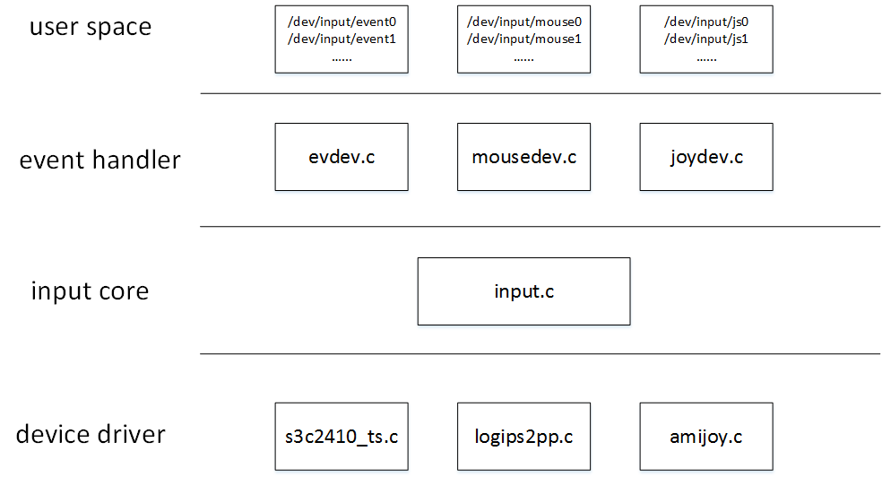

Input mouse driver analysis
基于usb mouse理解Input子系统架构
Input子系统架构

一个handler可以被多个应用程序同时打开；
一个handler适配多个input device，每个input device生成一个handler对应的设备节点，可以将handler视为input device的驱动，input device driver会注册input device；
evdev_handler会被所有的input设备适配；
常见handler：
evdev_handler: 事件处理层，它支持所有设备，并将输入事情通知用户程序，或反过来，通知驱动程序
joydev_handler: 游戏杆设备处理，游戏杆有不同类型，它只处理支持joydev_handler类型的设备
mousedev_handler: 同理，鼠标也有不同类型呀，它支持的鼠标类型设备才能处理
grab 是为了独占，保证此设备不会被别的进程捕获
USB键盘
drivers/hid/usbhid/usbkbd.c
drivers/hid/usbhid/usbmouse.c
usb mouse注册input device、上报数据处理流程
* drivers/hid/usbhid/usbmouse.c └── module_usb_driver(usb_mouse_driver); └── static struct usb_driver usb_mouse_driver └── .probe = usb_mouse_probe, └── static int usb_mouse_probe(struct usb_interface *intf, const struct usb_device_id *id) ├── input_dev = input_allocate_device(); ├── mouse->dev = input_dev; ├── error = input_register_device(mouse->dev); --> 注册input device │ └── input_attach_handler(dev, handler); --> 匹配input device driver(handler) │ └── error = handler->connect(handler, dev, id); --> connect调用mousedev_connect()，注册设备 └── usb_fill_int_urb(mouse->irq, dev, pipe, mouse->data, (maxp > 8 ? 8 : maxp), usb_mouse_irq, mouse, endpoint->bInterval); └── static void usb_mouse_irq(struct urb *urb) └── input_sync(dev); └── input_event(dev, EV_SYN, SYN_REPORT, 0); └── input_handle_event(dev, type, code, value); └── disposition & INPUT_FLUSH └── input_pass_values(dev, dev->vals, dev->num_vals); └── input_to_handler(handle, vals, count); └── else if (handler->event) └── handler->event(handle, v->type, v->code, v->value); // 上报事件
Input子系统
input子系统注册、打开、上报数据流程
* drivers/input/mousedev.c └── module_init(mousedev_init); └── error = input_register_handler(&mousedev_handler); // 完成input驱动器注册 ├── static struct input_handler mousedev_handler │ ├── .connect = mousedev_connect, │ │ └── mousedev = mousedev_create(dev, handler, false); // usb鼠标注册到input子系统来之后会调用这里创建设备节点 │ │ ├── mousedev->open_device = mousedev_open_device; │ │ └── cdev_init(&mousedev->cdev, &mousedev_fops); // usb鼠标设备节点处理函数 │ │ └── static const struct file_operations mousedev_fops │ │ └── .open = mousedev_open, │ │ ├── mousedev_attach_client(mousedev, client); // 将当前设备加入open设备链表 │ │ │ └── list_add_tail_rcu(&client->node, &mousedev->client_list); │ │ └── error = mousedev->open_device(mousedev); │ │ └── static int mousedev_open_device(struct mousedev *mousedev) │ │ └── retval = input_open_device(&mousedev->handle); │ │ └── dev->open(dev) │ └── .event = mousedev_event, │ └── case EV_SYN: │ └── code == SYN_REPORT │ └── mousedev_notify_readers(mousedev, &mousedev->packet); │ └── list_for_each_entry_rcu(client, &mousedev->client_list, node) │ └── 逐一通知open设备链表 └── int input_register_handler(struct input_handler *handler) ├── list_add_tail(&handler->node, &input_handler_list); // 相当于注册input bus驱动 └── list_for_each_entry(dev, &input_dev_list, node) └── input_attach_handler(dev, handler); // 检查一下是否有合适的设备